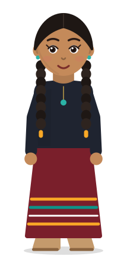

{{svT.lhTitle}}
{{svT.slogan}}
{{svT.lhSub}}
{{svT.lhNote}}
%22%3E%3Cg transform=%22translate(32 36) scale(1.07) translate(-32 -36)%22%3E%3Cpath d=%22M10.5 66C12 56.5 19 52 25.5 51H38.5C45 52 52 56.5 53.5 66Z%22 fill=%22%23F6F1E7%22 stroke=%22%2314161A%22 stroke-width=%221.5%22 stroke-linejoin=%22round%22 stroke-linecap=%22round%22/%3E%3Cpath d=%22M45.5 54C49.8 57 52.3 61 53 66H53.5C52 56.5 45 52 38.5 51Z%22 fill=%22%23E4DBC9%22/%3E%3Cpath d=%22M39.6 52.6C44 56 46.4 60.4 47.2 66M24.6 52.6C21.8 55.2 20.4 58.4 19.8 61.4%22 fill=%22none%22 stroke=%22%2314161A%22 stroke-width=%221.5%22 stroke-linejoin=%22round%22 stroke-linecap=%22round%22/%3E%3Cpath d=%22M24.60 13.60Q23.21 16.05 20.40 16.20Q19.79 18.88 17.20 19.80Q17.41 22.55 15.20 24.20Q16.18 26.92 14.40 29.20Q16.03 31.56 14.90 34.20Q17.11 35.85 16.90 38.60Q19.26 38.99 20.20 41.20L23 37L23.5 16Z%22 fill=%22%23F6F1E7%22 stroke=%22%2314161A%22 stroke-width=%221.5%22 stroke-linejoin=%22round%22 stroke-linecap=%22round%22/%3E%3Cpath d=%22M39.40 13.60Q40.78 16.05 43.60 16.20Q44.21 18.88 46.80 19.80Q46.59 22.55 48.80 24.20Q47.83 26.92 49.60 29.20Q47.98 31.56 49.10 34.20Q46.89 35.85 47.10 38.60Q44.73 38.99 43.80 41.20L41 37L40.5 16Z%22 fill=%22%23F6F1E7%22 stroke=%22%2314161A%22 stroke-width=%221.5%22 stroke-linejoin=%22round%22 stroke-linecap=%22round%22/%3E%3Cpath d=%22M19.4 19.6q2.2 1 1.8 3.4M16.9 25.4q2.2 1 1.8 3.4M17.2 33.6q2 1.2 1.4 3.4M44.6 19.6q-2.2 1-1.8 3.4M47.1 25.4q-2.2 1-1.8 3.4M46.8 33.6q-2 1.2-1.4 3.4%22 fill=%22none%22 stroke=%22%2314161A%22 stroke-width=%221%22 stroke-linecap=%22round%22 opacity=%22.6%22/%3E%3Cpath d=%22M19.4 36C17.2 22.4 22.4 10 32 10S46.8 22.4 44.6 36L44 42H20Z%22 fill=%22%23F6F1E7%22 stroke=%22%2314161A%22 stroke-width=%221.5%22 stroke-linejoin=%22round%22 stroke-linecap=%22round%22/%3E%3Cpath d=%22M40 12.8C44 16 45.6 22 45 29L43.2 31C43.6 23.6 42.3 17.4 40 12.8Z%22 fill=%22%23E4DBC9%22/%3E%3Cpath d=%22M26.1 16.6Q32 14.7 37.9 16.6M27.6 19.4Q32 18.1 36.4 19.4%22 fill=%22none%22 stroke=%22%2314161A%22 stroke-width=%221%22 stroke-linecap=%22round%22 opacity=%22.5%22/%3E%3Cellipse cx=%2219%22 cy=%2231.4%22 rx=%222.4%22 ry=%223.6%22 fill=%22%23F6F1E7%22 stroke=%22%2314161A%22 stroke-width=%221.5%22 stroke-linejoin=%22round%22 stroke-linecap=%22round%22/%3E%3Cellipse cx=%2245%22 cy=%2231.4%22 rx=%222.4%22 ry=%223.6%22 fill=%22%23F6F1E7%22 stroke=%22%2314161A%22 stroke-width=%221.5%22 stroke-linejoin=%22round%22 stroke-linecap=%22round%22/%3E%3Cellipse cx=%2227.3%22 cy=%2228%22 rx=%222.9%22 ry=%222%22 fill=%22%23E4DBC9%22/%3E%3Cellipse cx=%2236.7%22 cy=%2228%22 rx=%222.9%22 ry=%222%22 fill=%22%23E4DBC9%22/%3E%3Cpath d=%22M23.8 22.9Q27.2 20.2 30.4 22.5%22 fill=%22none%22 stroke=%22%2314161A%22 stroke-width=%222.2%22 stroke-linecap=%22round%22/%3E%3Cpath d=%22M33.6 23.8Q36.8 22 40.2 24.1%22 fill=%22none%22 stroke=%22%2314161A%22 stroke-width=%222.2%22 stroke-linecap=%22round%22/%3E%3Cellipse cx=%2227.3%22 cy=%2228.4%22 rx=%221.35%22 ry=%221.5%22 fill=%22%2314161A%22/%3E%3Cellipse cx=%2236.7%22 cy=%2228.4%22 rx=%221.35%22 ry=%221.5%22 fill=%22%2314161A%22/%3E%3Ccircle cx=%2227.7%22 cy=%2227.9%22 r=%22.45%22 fill=%22%23FFFFFF%22/%3E%3Ccircle cx=%2237.1%22 cy=%2227.9%22 r=%22.45%22 fill=%22%23FFFFFF%22/%3E%3Cpath d=%22M19.30 33.40Q17.77 35.80 18.30 38.60Q17.82 41.42 19.40 43.80Q19.74 46.59 21.90 48.40Q23.05 51.05 25.70 52.20Q27.47 54.46 30.30 54.90Q32.00 55.57 33.70 54.90Q36.53 54.46 38.30 52.20Q40.95 51.05 42.10 48.40Q44.26 46.59 44.60 43.80Q46.18 41.42 45.70 38.60Q46.23 35.80 44.70 33.40C42.4 36.6 39 37.4 36.6 36.8C34 35.7 30 35.7 27.4 36.8C25 37.4 21.6 36.6 19.3 33.4Z%22 fill=%22%23F6F1E7%22 stroke=%22%2314161A%22 stroke-width=%221.5%22 stroke-linejoin=%22round%22 stroke-linecap=%22round%22/%3E%3Cpath d=%22M43.4 38.6C44 42.6 42.8 46.4 40.4 49.6C41.8 46 42.8 42.4 43.4 38.6Z%22 fill=%22%23E4DBC9%22/%3E%3Cpath d=%22M23.6 39.6q1.6 2.6 0 5.2M27.8 42.4q1.6 2.6 0 5.2M32 43.4q1.6 2.6 0 5.2M36.2 42.4q1.6 2.6 0 5.2M40.4 39.6q1.6 2.6 0 5.2M25.8 47.8q1.4 2 0 4M30 49.6q1.4 2 0 3.6M34.2 49.6q1.4 2 0 3.6M38.4 47.8q1.4 2 0 4%22 fill=%22none%22 stroke=%22%2314161A%22 stroke-width=%221%22 stroke-linecap=%22round%22 opacity=%22.62%22/%3E%3Cpath d=%22M30.2 40.3Q32 41 33.8 40.3%22 fill=%22none%22 stroke=%22%2314161A%22 stroke-width=%221.2%22 stroke-linecap=%22round%22/%3E%3Cpath d=%22M30.8 27.4C30.5 29.9 29.3 31.5 28.1 32.8C29.3 34.7 34.7 34.7 35.9 32.8C34.7 31.5 33.5 29.9 33.2 27.4%22 fill=%22%23F6F1E7%22 stroke=%22%2314161A%22 stroke-width=%221.5%22 stroke-linejoin=%22round%22 stroke-linecap=%22round%22/%3E%3Ccircle cx=%2230.2%22 cy=%2233.3%22 r=%22.75%22 fill=%22%2314161A%22/%3E%3Ccircle cx=%2233.8%22 cy=%2233.3%22 r=%22.75%22 fill=%22%2314161A%22/%3E%3Cpath d=%22M25.4 38.6C27.8 35.8 30.7 36 32 37.4C33.3 36 36.2 35.8 38.6 38.6C36.2 39.8 33.7 39.6 32 38.8C30.3 39.6 27.8 39.8 25.4 38.6Z%22 fill=%22%23F6F1E7%22 stroke=%22%2314161A%22 stroke-width=%221.5%22 stroke-linejoin=%22round%22 stroke-linecap=%22round%22/%3E%3C/g%3E%3C/g%3E%3Ccircle cx=%2232%22 cy=%2232%22 r=%2231.2%22 fill=%22none%22 stroke=%22%23FFFFFF%22 stroke-opacity=%22.3%22 stroke-width=%221.6%22/%3E%3C/svg%3E) Socrates
SocratesBuilt for the learner to lead.
Too often, school teaches children to wait: for the bell, for permission, for someone to tell them what to learn next. Vachuo is built the other way round. It keeps seven promises, among them: she can question anything Vachuo thinks about her, her open time is never watched, learning out in the world counts, her record belongs to her, and success means a learner taking the lead more!


Children arrive curious. School teaches them to wait.
Every toddler teaches herself to speak. Curiosity doesn’t need to be manufactured; it needs to be left alone and given somewhere to go. So the question isn’t why an 8-year-old should care about fractions. It’s this:

“What does an 8-year-old already care about that needs fractions?”
For Amani it was a chapati recipe for forty people. Start there, and fractions stop being a subject and become a tool. Children learn best when learning starts from their own world.
We don’t sell “No teachers.” We sell this:
AI instructs and coaches. People and peers hold the conversation. The learner decides where to go.
Good teaching mixes three things: clear explanation, patient coaching and real conversation. The learner steers all three.
Room to think is part of learning.
Children learn a great deal when nobody is teaching them: reading for fun, building something, wandering outside, helping at home, or simply thinking. That needs time nobody has booked. A child’s week should not be all work.
So the open part of Amani’s week is hers. Vachuo never schedules over it, and never tracks, scores or reports it, not even to her parents.
See how Today protects itNot a dashboard. A thinking partner that hands the decisions back.
Most homeschooling products show parents analytics. Vachuo’s Parent Copilot says what happened in plain words, suggests a next step, and leaves the judgment with you and your child.
- Math
- 82%
- English
- 91%
- Lessons completed
- 17
A typical dashboard, with just numbers. It says what happened, not what it means or what to do next.
Bob, 9Nothing needs youBob worked out multiplication this week and keeps tripping on remainders. Vachuo suggests three short lessons on sharing things out, which he can say no to. Nothing needs you, but here’s a question he might enjoy at dinner: “If seven friends share 30 sweets, what would you do with the two left over?”
 Johari, 13Your call
Johari, 13Your callJohari hasn’t written for four days. She can do the work, and she has been drawing animals instead. Would you like to ask her about it yourself, let Vachuo suggest writing projects about animals, or connect her with a writing coach?
The AI proposes. A person decides.
{{trLive}}

{{svT.slogan}}
Start with one family. Build toward a world that teaches.
Families, tutors, microschools and schools: tell us who you are and we’ll write when Vachuo opens in your region.
{{emailMsg}}